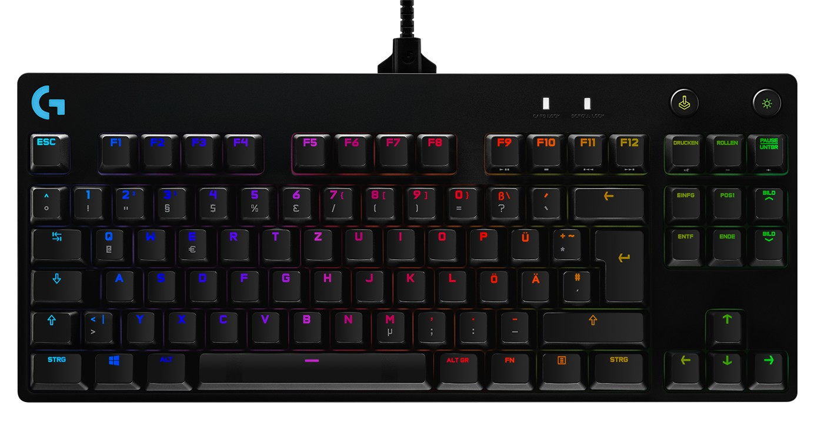
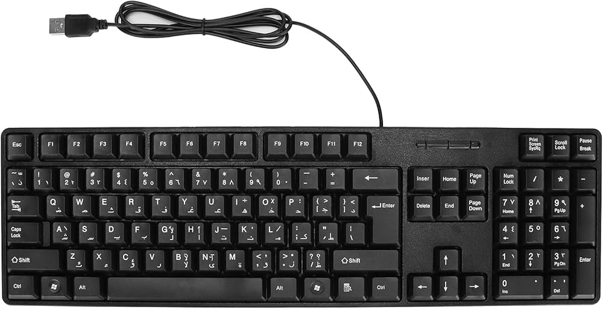
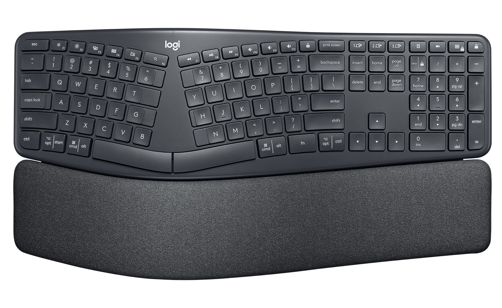

Які бувають клавіатури за призначенням?
-
Геймерські клавіатури
Ці клавіатури призначенні для геймерів, які потребують швидкої реакції, точності та додаткових функцій для ігор.
У цих клавіатур зазвичай використовуються механічні перемикачі, або аналоги для забезпечення чіткого відгуку, макроси для складних комбінацій в іграх, антигостинг і N-Key Rollover для одночасного натискання багатьох клавіш.
- 
-
Офісні клавіатури
Ці клавіатури призначенні для зручного набору тексту та роботи в офісі, гос.закладах та дома.
У цих клавіатур зазвичай використовуються мембранний механізм, завдяки цьому такі клавіатури тихі, комфортні та недорогі. Також вони стійкі до пилу і води.
- 
-
Ергономічні клавіатури
Ці клавіатури призначенні для користувачів, які проводять багато часу за комп’ютером і хочуть уникнути дискомфорту чи болю в зап’ястях.
Ці клавіатури є аналогоми офісних клавіатур, але с з роздільнимі клавішамі завдяки чому руки приймають природне положення.
- 
-
Мультимедійні клавіатури
Ці клавіатури призначенні Для управління мультимедійними пристроями, такими як телевізори, проєктори, домашні системи
Ці клавіатури є аналогоми офісних клавіатур, але с з роздільнимі клавішамі завдяки чому руки приймають природне положення.